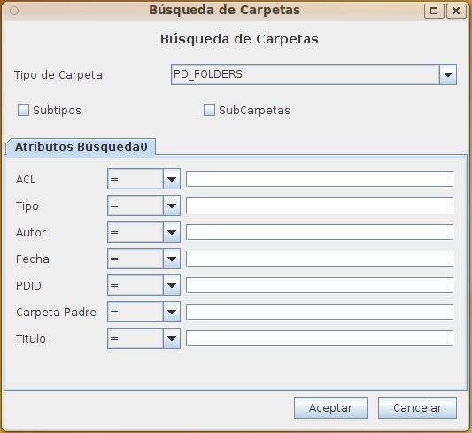

Buscar Carpeta OpenProdoc
Este formulario permite buscar carpetas por una combinación de diversos criterios. Al elegir el tipo de carpeta aparecerán los metadatos propios de ese tipo así como los comunes a todos los tipos
Además de los atributos propios del tipo de carpeta elegido, siempre se puede buscar por una combinación:
- PDID: Identificador único de la Carpeta. Es la forma más rápida de localizar una carpeta.
- Tipo de Carpeta: Permite localizar todas las Carpetas de un tipo. (Ej. "Expedientes Compra")
- Titulo de la carpeta: Permite localizar la carpeta por su Titulo.
- ACL de la carpeta: Localización de la carpeta con una política (ACL) de seguridad dada.(Ej. "Exp. Confidenciales")
- Carpeta Contenedora: Permite buscar las carpetas contenidas en una carpeta por el PDID (identificador único) de la carpeta.
- Autor: Para filtrar todas las carpetas que un usuario ha creado o modificado.(Ej. "Pedro Perez").
- Fecha: Búsqueda de acuerdo a la fecha/hora de inserción o modificación de la carpeta en el sistema.
Adicionalmente a los metadatos, hay tres opciones que puede activarse y cuyo efecto en la búsqueda es el siguiente:
- Subtipos: Por defecto solo se busca carpetas del tipo actual. Si se activa se buscará además en todos los subtipos hasta cualquier número de niveles.
- SubCarpetas: Por defecto se buscará carpetas independientemente de su ubicación. Si se activa se restringe la búsqueda únicamente a la carpeta actual y todas sus subcarpetas hasta cualquier número de niveles..

Debe elegirse siempre criterios lo más restrictivos posible para obtener un número reducido de resultados. En otro caso la búsqueda puede tardar mucho tiempo y provocar problemas por exceso de resultados.
Al pulsar aceptar se iniciará la búsqueda de las carpetas que cumplen los criterior especificados y se devolverá una lista. Sobre esa lista, seleccionando una, puede realizarse las mismas operaciones que sobre una carpeta seleccionado en el árbol principal.
Índice Ayuda OpenProdoc